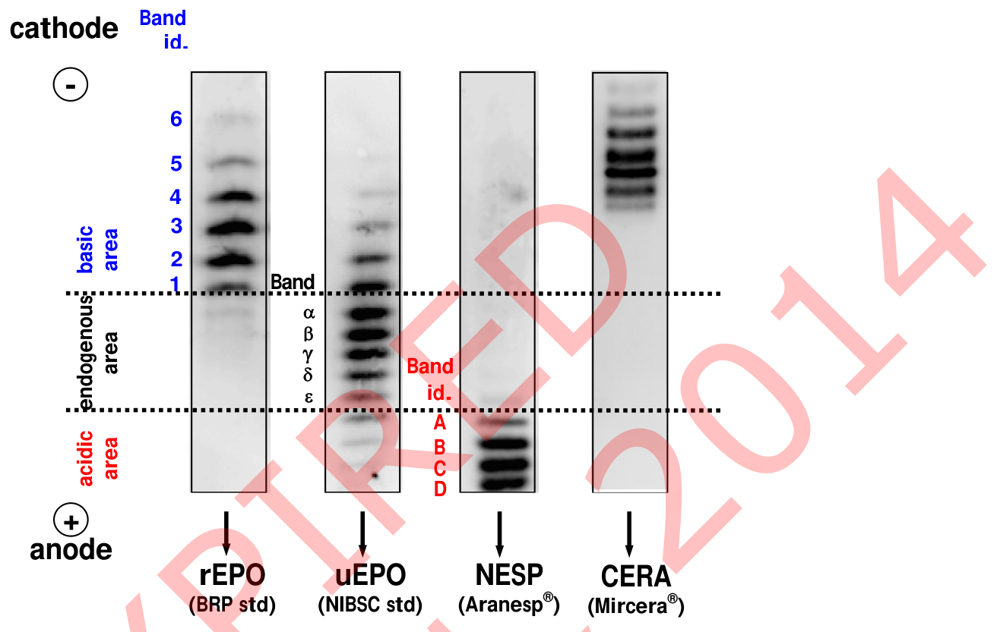
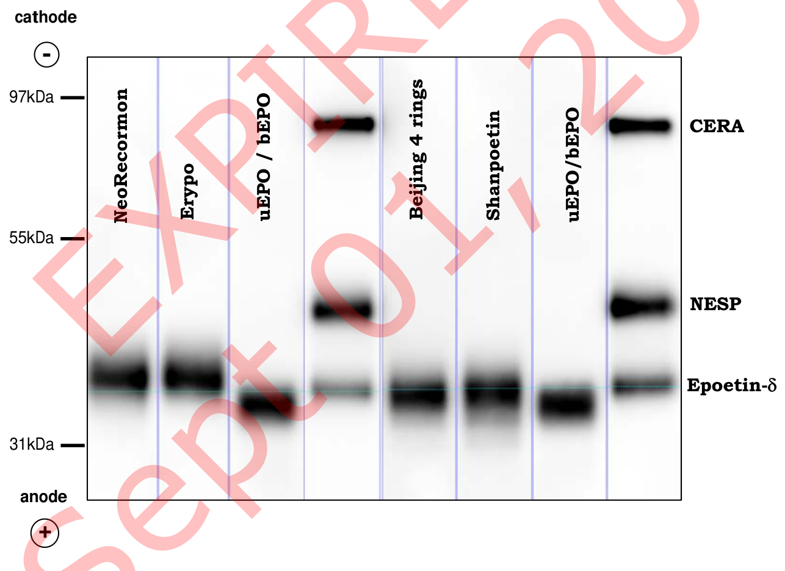
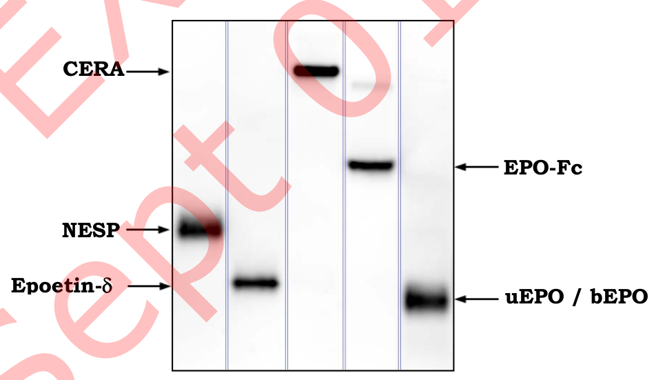
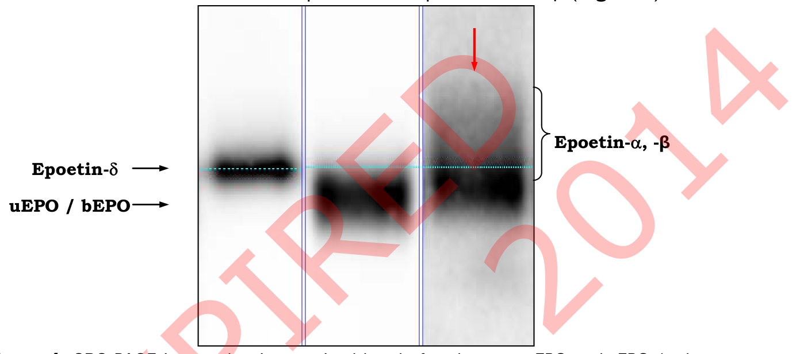
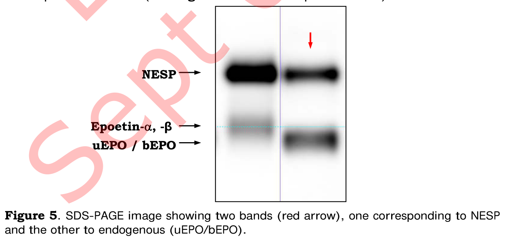
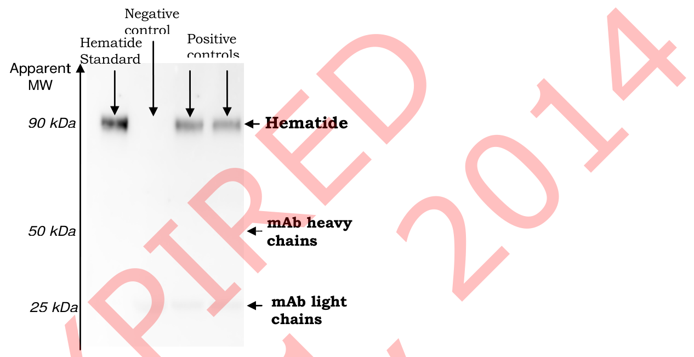

Technical Documents · TD2013EPO
Edition v1.0, 2013 (version 1.0) · effective 1 March 2013 · superseded
Retrieved on 25 November 2026 from https://www.wada-ama.org/sites/default/files/2022-01/WADA-TD2013EPO-Harmonization-Analysis-of-Recombinant-Erythropoietins-EN.pdf
Editions: v1.0, 2027 (current) · v1.0, 2024 · v1.0, 2022 · v2.0, 2021 · v1.0, 2014 · v1.0, 2013 · v2.0, 2009 · v2.0, 2007 · v1.0, 2005
p. 1
HARMONIZATION OF ANALYSIS AND REPORTING OF RECOMBINANT ERYTHROPOIETINS (i.e. EPOETINS) AND ANALOGUES (e.g. DARBEPOETIN, PEGSERPOETIN, PEGINESATIDE, EPO-Fc) BY ELECTROPHORETIC TECHNIQUES.
1.0 Introduction
This document has been established to harmonize the detection and reporting of recombinant erythropoietins (i.e. epoetins) and their analogues (e.g. darbepoetin, pegserpoetin, peginesatide, EPO-Fc) by Laboratories when analyzed by electrophoretic techniques. All Laboratories are required to apply these criteria in the routine performance of the tests to identify the referred substances. In this document, the following abbreviations, acronyms and trademarks are used: CERA: (Mircera ® , Roche): Continuous Erythropoietin Receptor Activator, the erythropoietin analogue known by its INN as pegserpoetin, a pegylated derivative of epoetin-β. EPO: Erythropoietin EPO-Fc: Fusion protein of EPO with human immunoglobulin heavy chain Fc (fragment, crystallizable) region. bEPO: endogenous erythropoietin (secreted naturally by the athlete's own tissues) as found in blood (either serum or plasma). rEPO: recombinant erythropoietin. These pharmaceutical substances are known by their International Non-proprietary Name (INN) as "epoetin". The different preparations are identified by a Greek letter, e.g. epoetin-α, -β, -ω, -δ, etc. Other preparations (e.g. generics or copies) referred collectively as "rEPO biosimilars" may have differing isoform profiles not exactly matching those already referenced. uEPO: endogenous erythropoietin (secreted naturally by the athlete's own tissues) as excreted in urine. Hematide: (Omontys ® , Affymax Inc.): Known by its INN as peginesatide, a pegylated homodimeric peptide with no structural relationship to EPO. IEF: Isoelectric focusing. NESP (Aranesp ® , Amgen): Novel erythropoietin stimulating protein, the erythropoietin analogue known by its INN as darbepoetin-α. SAR-PAGE: sodium N-lauroylsarcosinate ('sarcosyl') polyacrylamide gel electrophoresis. SDS-PAGE: sodium dodecyl sulphate polyacrylamide gel electrophoresis.
p. 2
2.0 Analysis
The Laboratory shall use methods that are validated and fit for the purpose of detecting the administration of rEPO and analogues in urine or in plasma/serum. A summary of the analytical strategy is given in Table 1.
2.1 Initial Testing Procedure
· For the
Initial Testing Procedure, the Laboratory shall apply either IEF [1] or SAR-PAGE [8, 9] after enrichment for EPO and/or its analogues (either through non-specific methods or after immunopurification¹
· Following proper validation in the matrix of analysis, the Laboratory may also apply, when available, substance-specific detection methods (e.g. immunoassays or other affinity-binding assays or mass spectrometry (MS)- based methods) for the detection of EPO analogues (e.g. CERA, Hematide, EPO-Fc) [10-12]. [2-7]).
2.2 Confirmation Procedure
· The Confirmation Procedure will depend on the rEPO or analogue presumptively found and the methodology employed for the
Initial Testing Procedure.
· Immunopurification of all Sample Aliquots shall be performed prior to Sample confirmation analyses by electrophoretic methods [2-7].
· When the Initial Testing Procedure is performed by IEF [1] following immunopurification, the confirmation of rEPOs in urine shall be performed by SDS-PAGE [13, 14] or SAR-PAGE [8, 9] analysis on a new, immunopurified Aliquot of Sample "A". There is no need to repeat the IEF to consider the Confirmation Procedure as completed.
· When the Initial Testing Procedure is performed by IEF without immunopurification, the confirmation of rEPOs in urine shall be performed by IEF plus SDS-PAGE or IEF plus SAR-PAGE on new, immunopurified Aliquots of Sample "A". If available, a retentate remaining from the Initial Testing Procedure may be further immunopurified and used for the application of IEF analysis as part of the Confirmation Procedure.
· When the Initial Testing Procedure is performed by SAR-PAGE, the confirmation of rEPOs in urine shall be performed by IEF plus SDS-PAGE or IEF plus SAR-PAGE on new, immunopurified Aliquots of Sample "A".
¹For immunopurification, antibodies other than the one used for blotting shall be used.
p. 3
- Irrespective of the
Initial Testing Procedure used, the confirmation of rEPOs in serum/plasma shall be performed by SDS-PAGE or SAR-PAGE on new, immunopurified Aliquots of Sample "A".
2.2.2 NESP
· Irrespective of the
Initial Testing Procedure used, for the confirmation of NESP in urine or serum/plasma, the Laboratory may choose to apply IEF or SDS-PAGE or SAR-PAGE on new, immunopurified Aliquot(s) of Sample "A". At its discretion, the Laboratory may also use a combination of IEF and either SDS-PAGE or SAR-PAGE.
· Irrespective of the
Initial Testing Procedure used, for the confirmation of CERA in urine or serum/plasma, the Laboratory may choose to apply IEF or SAR-PAGE or, at the Laboratory's discretion, a combination of these methods on a new, immunopurified Aliquot of Sample "A".
· EPO analogues, which are initially tested by substance-specific methods (e.g. ELISA for Hematide), shall be confirmed by a second, independent method (e.g. SDS-PAGE or SAR-PAGE).
· Where an MS method is available, it can be used for both the Initial Testing and the Confirmation Procedures, i.e. no independent second method is required (however, a second method may be used in place of the MS for either the Initial Testing or the Confirmation Procedure). In that case, the identification criteria described in the Technical Document on Identification Criteria for Qualitative Assays, TD IDCR [15] shall be met.
· For the Confirmation Procedure of any rEPO or analogue, the Laboratory may also apply alternative methods, validated according to International Standard for Laboratories (ISL) requirements that demonstrate the exogenous origin of the substance detected (e.g. based on the detection of chemical structures only found on rEPO, but not on endogenous EPO).
2.3 "B" Sample Confirmation Procedure
· For the Confirmation Procedure on the "B" Sample, the Laboratory shall apply either IEF or SDS-PAGE or SAR-PAGE or LC/MS according to Table 1.
p. 4
Table 1. Testing for rEPOs and analogues in urine and blood (serum/plasma) Urine
| Initial Testing Procedure.Method | Initial Testing Procedure.Presumptive Analytical Finding | Confirmation Procedure.Method (sample A) | Confirmation Procedure.Method (sample B) |
|---|---|---|---|
| IEF or³ SAR- PAGE | rEPO | IEF and² (SDS-PAGE or SAR-PAGE) | IEF or³ (SDS-PAGE or SAR-PAGE) |
| IEF or³ SAR- PAGE | NESP | IEF or³ ( SDS- PAGE or SAR-PAGE) | IEF or³ (SDS- PAGE or SAR-PAGE) |
| IEF or³ SAR- PAGE | CERA | IEF or³ SAR-PAGE | IEF or³ SAR-PAGE |
| ELISA or³ SDS-PAGE or³ LC/MS | Hematide | SDS-PAGE or³ LC/MS | SDS-PAGE or³ LC/MS |
| ELISA or³ (SDS-PAGE or SAR-PAGE) | EPO-Fc | SDS-PAGE or SAR- PAGE | SDS-PAGE or SAR- PAGE |
| Initial Testing Procedure.Method | Initial Testing Procedure.Presumptive Analytical Finding | Confirmation Procedure.Method (samples A and B) |
|---|---|---|
| IEF or³ SAR-PAGE | rEPO | SDS-PAGE or SAR-PAGE IEF or³ (SDS-PAGE or SAR- PAGE) 01, |
| IEF or³ SAR-PAGE | NESP | |
| IEF or³ SAR-PAGE | CERA | IEF or³ SAR-PAGE |
| ELISA | CERA | IEF or³ SAR-PAGE |
| ELISA or³ SDS-PAGE or³ LC/MS | Hematide | SDS-PAGE or³ LC/MS |
| ELISA or³ (SDS-PAGE or SAR-PAGE) | EPO-Fc | SDS-PAGE or SAR-PAGE |
³The decision on which method(s) is used lies with the Laboratory. At its discretion, the Laboratory may also use a combination of IEF and either SDS-PAGE or SAR-PAGE.
Serum/plasma ²When the
Initial Testing Procedure included the application of IEF with EPO immunopurification, it is not necessary to repeat the IEF analysis for the confirmation of rEPOs; the application of SDS-PAGE or SAR-PAGE is sufficient. However, if the
Initial Testing Procedure was performed by IEF without immunopurification, the confirmation of rEPOs in urine shall be performed by both methodologies (IEF plus either SDS-PAGE or SAR-PAGE) on new, immunopurified Aliquots of Sample "A". See §2.2.1 for details. Sept 01, 201
p. 5
3.0 Description of the methods
3.1 The Isoelectrofocusing (IEF) test [1]
3.1.1 Sample preparation
For the
Initial Testing Procedure, any validated method able to concentrate EPO and/or its analogues (e.g. ultrafiltration [1], selective protein precipitation [2], etc* .) may be used; immunopurification is not mandatory.
For the Confirmation Procedures, immunopurification of the Sample is required prior to the application of the IEF method [2-7].
*Note: Any pre-concentration or purification method shall require an appropriate validation by the Laboratory.
3.1.2 Isoelectric Focusing Isoelectric focusing is performed in a pH range compatible with the isoelectric points (pI) of both the natural urinary EPO and its recombinant analogues. IEF is performed under denaturing conditions (approximately 7M urea).
3.1.3 Double blotting After IEF separation, double blotting procedure is mandatory. The primary antibody used in this step must be the monoclonal mouse anti-human EPO clone AE7A
- 3.1.4 Detection The isoelectric patterns of EPO are revealed by the use of an appropriate, sensitive detection system (e.g. amplified chemiluminescent system). The signal obtained must be quantifiable in order to appreciate the relative intensities of the different isoforms of an EPO pattern.
3.2 SDS-PAGE and SAR-PAGE tests [8, 9, 13, 14] SDS-PAGE is a well established technique that does not require further specific description. The electrophoretic separation (e.g. on a 10% T gel) may be used in combination with single or double blotting and an appropriate sensitive detection system (e.g. amplified chemiluminescent system). For SAR-PAGE, SDS in gel, sample and running buffers is replaced by sodium N-lauroylsarcosinate.
For the
Initial Testing Procedure, any validated method able to concentrate EPO and/or its analogues in an SDS-PAGE or SAR-PAGE compatible form may be used; immunopurification is not mandatory but has proved to be very efficient for this step* .
*Note: Any pre-concentration or purification method shall require an appropriate validation by the Laboratory.
p. 6
For the Confirmation Procedures, immunopurification of the Sample is required prior to the application of SDS-PAGE or SAR-PAGE.
3.3 SDS-PAGE test for detection of Hematide [11]
Hematide may be detected, for example, by SDS-PAGE (e.g. Nu-PAGE 4-12% Bis Tris gels). Immunopurification of the Sample is required for confirmation. Different antibodies may be used for immunopurification of Hematide which are specific for either the peptidic (e.g. clone 1G9, Affymax Inc.) or the polyethylene glycol moieties of the molecule. The immunodetection shall be performed by double-blotting using antibodies other than those used for the immunopurification (e.g. clone 11F9, Affymax Inc.) and using an appropriate, sensitive detection system (e.g. amplified chemiluminescent system).
4.0 Evaluation and Interpretation of Results
Results from the Confirmation Procedure need to fulfil the quality and identification criteria described herein. · When more than one method is used for the Confirmation Procedure, the acceptance and identification criteria must be fulfilled on both procedures employed before reporting an Adverse Analytical Finding; · In cases when the acceptance and identification criteria are met for only one of the methods employed for the Confirmation Procedure, the Sample shall be reported as an Atypical Finding.
4.1 Acceptance criteria
The acceptance criteria for the IEF and SDS-PAGE or SAR-PAGE procedures define the requisites that an image shall fulfil to allow the application of the identification criteria in order to ascertain the presence of rEPO, CERA, NESP or any other EPO analogue.
-
Spots, smears, areas of excessive background or absent signal in a lane that significantly interfere with the application of the identification criteria shall invalidate the lane.
-
Comparison to reference samples shall allow assignment of corresponding migrating bands in the Athlete's Sample.
p. 7
4.2 Identification Criteria
4.2.1 The IEF procedure
Figure 1 shows an illustration of an IEF test result⁴ .
The identification windows for each electrophoretic lane as well as the basic, endogenous and acidic areas are defined. Bands of the preparations used as reference are identified by numbers and letters.
The basic and acidic areas are defined, as described, by the position of the bands corresponding to the rEPO Biological Reference Preparation (BRP) of the European Pharmacopeia (equimolar mixture of epoetin-α and -β) and NESP; by exclusion, the endogenous area is defined in between. In the figure the endogenous area is exemplified by uEPO (International Reference Preparation, IRP, from the National Institute for Biological Standards and Control, NIBSC, UK
5 The bands of rEPO, uEPO and NESP in the basic, endogenous and acidic areas respectively, are identified by numbers and letters as shown. CERA shows a different pattern with some bands approximately co-localized with those defined by rEPO and others interspersed amongst rEPO bands. This band pattern specifically identifies CERA. ).
The following identification criteria define the requisites that the image shall fulfil to consider an Adverse Analytical Finding corresponding to the presence of rEPO, NESP or CERA.
-
In the basic area (Figure 1) there must be at least 3 acceptable, consecutive bands assigned as "1", "2", and "3" as defined in the corresponding rEPO preparation used as reference⁶ 2. The 2 most intense bands measured by densitometry shall be in the basic area. ;
-
When the analysis is performed in blood (serum/plasma) the intensity of those bands must be approximately twice or more than any other band in the endogenous area. ⁴These are examples of standards of different EPO analogues after IEF; in an actual Sample the presence of endogenous uEPO may also be detected. ⁵Other preparations of uEPO or bEPO may be utilized as reference for endogenous EPO.
⁶The beginning of the basic area is established by band "1" in the rEPO preparation used as reference (Figure 1).
p. 8

Figure 1. Image of
the identification windows of lanes obtained by the chemiluminescence acquisition system corresponding to the analysis of rEPO, CERA, NESP and uEPO⁴ .
4.2.1.2 NESP 1. In the acidic area (Figure 1) there must be at least 3 acceptable, consecutive bands assigned as "A", "B", "C" or "D" as defined in the corresponding NESP preparation used as reference⁷ 2. The two most intense bands measured by densitometry shall be in the acidic area. ;
⁷The beginning of the acidic area is established by band “A” in the NESP preparation used as reference (Figure 1).
In the basic area, there must be at least 4 consecutive bands corresponding with the CERA preparation used as reference.
p. 9
4.2.2 The SDS-PAGE or SAR-PAGE procedure
The identification criteria for SDS-PAGE and SAR-PAGE are the same, since both methods perform identically except for the better sensitivity of SAR-PAGE for CERA.
rEPOs and analogues can be distinguished from endogenous EPO (uEPO, bEPO) based on their characteristic band shape and different molecular mass.

The migration behaviour (band) of each rEPO or analogue, i.e. position and shape (width, focused or more diffused) can be used to confirm the identity and/or exogenous origin of the substance. The centroid or the boundaries of the width of the band can be used to ascertain that its position and shape differs from the position of endogenous EPO run in parallel as illustrated in Figure 2 (which exemplifies the SDS-PAGE behaviour of different rEPOs as well as uEPO/bEPO, NESP and CERA). Figure 2. SDS-PAGE image showing the broad band characteristic of some commercially available Epoetin-α and -β preparations (Neórecormon ® , Erypo ® , Beijing 4 rings, ShanpoetinTM ). The relative positions of endogenous urinary/blood EPO, Epoetin-δ, NESP and CERA are also shown.
p. 10
The following identification criteria define the requisites that the image shall fulfil to consider an Adverse Analytical Finding corresponding to the presence of rEPO, NESP, CERA or EPO-Fc when the SDS-PAGE or SAR-PAGE method is applied.
1. A single band is detected
rEPO: The band shape and
the apparent molecular mass of the band centroid correspond to the band shape and apparent molecular mass of the rEPO preparation used as reference.

· Epoetin-α and -β as well as the biosimilars have a characteristic band shape ("broad band") and higher apparent molecular mass than endogenous uEPO/bEPO (Figure 2); · Epoetin-δ has a characteristic band shape ("sharp band") and higher apparent molecular mass than endogenous uEPO/bEPO. Due to the sharpness of its band, epoetin-δ can be also differentiated from other recombinant epoetins (-α and -β as well as the biosimilars) (Figure 2, 3). NESP, CERA, EPO-Fc:
· The apparent molecular mass of the band centroid corresponds to the mass of the corresponding NESP, CERA or EPO-Fc preparation used as reference. · NESP (Figure 2, 3), CERA (Figure 2, 3), and EPO-Fc (Figure 3⁸ ) can be distinguished from endogenous EPOs (uEPO, bEPO) as well as from rEPOs based on their higher apparent molecular masses [16].
Figure 3: SAR-PAGE image showing the higher apparent molecular masses of CERA, EPO-Fc⁸ , NESP and Epoetin-δ in comparison to endogenous uEPO/bEPO.
⁸For EPO-Fc a second band in the higher mass region may be observed depending on the EPO-Fc concentration in the Sample or reference preparation. This band is due to EPO-Fc aggregation.
p. 11
- A mixed band consisting of endogenous EPO (uEPO, bEPO) and rEPO is detected: The band shape resembles that of the rEPO plus parts or the total of the uEPO/bEPO band.
- A diffuse or faint area of the band above the corresponding endogenous band is also indicative for the presence of epoetin-α and -β (Figure 4).


Figure 5. SDS-PAGE image showing two bands (red arrow), one corresponding to NESP and the other to endogenous (uEPO/bEPO).
Figure 4. SDS-PAGE image showing a mixed band of endogenous EPO and rEPO (red arrow). The diffused area of the band above the corresponding endogenous band is also indicative for the presence of epoetin-α and -β. 3. Two or more bands are detected:
· One of the bands fulfils the identification criteria for a single band as provided above (see Figure 5 as an example for NESP).
p. 12
4.2.3 SDS-PAGE for Hematide
The presence of hematide in a Sample is indicated by a band in the position corresponding to this EPO analogue, as indicated by the migration of the preparation used as reference (Figure 6). Additional bands corresponding to the light chains and heavy chains of the antibodies used for the immunopurification may be present and do not interfere with the interpretation of the results.

Figure 6. Image of the identification of hematide by SDS-PAGE on Nu-PAGE 4-12% Bis Tris gel.
5.0 Documentation and Reporting
When reporting results based on the application of the IEF and/or SDS-PAGE or SAR-PAGE, the Laboratory shall comply with the requirements of the WADA ISL and its associated Technical Document on Laboratory Documentation Packages (TD LDOC):
Initial Testing Procedure Requirements:
o Sample (initial Testing Aliquot); o Appropriate preparation used as reference enabling to define basic,
acidic and endogenous areas (IEF) or apparent molecular mass (SDS-PAGE, SAR-PAGE). o Negative control sample or reference material of uEPO.
Confirmation Procedure Requirements:
o Sample (confirmation Aliquot); o Positive control sample (e.g. rEPO, NESP, CERA, etc.); o Appropriate preparation used as reference (e.g. rEPO, NESP, CERA, etc.);
- Negative control sample.
p. 13
5.1 Provision of a Second Opinion
WADA requires that one second opinion is provided by one of the experts designated below⁹
before any Adverse Analytical Finding for rEPOs or analogues is reported to the Result Management Authority(-ies). Any second opinion provided shall be inserted as part of the Laboratory record in the Laboratory Documentation Package.
Provisions 3.2 and 6.2 of the Code allow the use of results to establish profile of doping by Athletes. Thus, even if the results of EPO analysis are reported as negative by a Laboratory on the basis of IEF and/or SDS/SAR-PAGE analysis, information contained in the analysis combined with other information (e.g. blood variables, longitudinal profiles, testimonies,…) may remain relevant in a more general context to establish anti-doping rule violations.
6.0 References
- Lasne F, Martin L, Crepin N, de Ceaurriz J. Detection of isoelectric profiles of erythropoietin in urine: differentiation of natural and administered recombinant hormones. Anal Biochem 311: 119-126 (2002). 2. F. Lasne, Martin L, Martin JA, de Ceaurriz J. Isoelectric profiles of human erythropoietin are different in serum and urine. Int J Biol Macromol 41: 354-357 (2007). 3. Mallorquí J, Segura J, de Bolòs C, Gutiérrez-Gallego R, Pascual JA. Recombinant erythropoietin found in seized blood bags from sportsmen. Haematologica 93 (2): 313-314 (2008). 4. Dehnes Y, Lamon S, Lönnberg M. Erythropoietin (EPO) immunoaffinity columns - A powerful tool for purifying EPO and its recombinant analogous. JPBA 53: 1028-1032 (2010). 5. Lönnberg M, Dehnes Y, Drevin M et al. Rapid affinity purification of erythropoietin from biological samples using disposable monoliths. J Chromatogr A. 1217(45): 7031-7037 (2010). ⁹Experts (Laboratory affiliation) that may provide second opinions on Laboratory findings for EPO: 1. Françoise Lasne (Paris) 2. Laurent Martin (Paris) 3. Christian Reichel (Seibersdorf) 4. José A. Pascual (Barcelona) 5. Christiane Ayotte (Montreal) 6. Yvette Dehnes (Oslo) 7. Nicolas Leuenberger (Lausanne) 8. Martial Saugy (Lausanne)
p. 14
-
Mallorquí J, Llop E, de Bolòs C, Gutiérrez-Gallego R, Segura J, Pascual JA. Purification of erythropoietin from human plasma samples using an immunoaffinity well plate. J Chromatogr B Analyt Technol Biomed Life Sci 878(23): 2117-2122 (2010).
-
Reihlen P, Völker-Schänzer E, Majer B, Schänzer W. Easy-to-use IEF compatible immunoaffinity purification of Erythropoietin from urine retentates. Drug Test Anal doi: 10.1002/dta.1361 (2012). [Epub ahead of print]
-
Reichel C, Abzieher F, Geisendorfer T. SARCOSYL-PAGE: a new method for the detection of MIRCERA- and EPO-doping in blood. Drug Test Anal 1(11-12): 494-504 (2009). 9. Reichel C. SARCOSYL-PAGE: A New Electrophoretic Method for the Separation and Immunological Detection of PEGylated Proteins. Methods Mol Biol. 869:65-79 (2012). 10. Lamon S, Giraud S, Egli L et al. A high-throughput test to detect C.E.R.A. doping in blood. J Pharm Biomed Anal 50(5): 954-8 (2009). 11. Leuenberger N, Saugy J, Mortensen RB, Schatz PJ, Giraud S, Saugy M. Methods for detection and confirmation of Hematide™/peginesatide in anti-doping samples. Forensic Sci Int 213(1-3): 15-9 (2011). 12. Möller I, Thomas A, Geyer H, Schänzer W, Thevis M. Synthesis, characterisation, and mass spectrometric detection of a pegylated EPO-mimetic peptide for sports drug testing purposes. Rapid Commun Mass Spectrom 25(15), 2115-2123 (2011). 13. Kohler M, Ayotte C, Desharnais P et al. Discrimination of recombinant and endogenous urinary erythropoietin by calculating relative mobility values from SDS gels. Int J Sports Med 29(1):1-6 (2008). 14. Reichel C, Kulovics R, Jordan V, Watzinger M, Geisendorfer T. SDS-PAGE of recombinant and endogenous erythropoietins: benefits and limitations of the method for application in doping control. Drug Test Anal 1(1): 43-50 (2009). 15. WADA Technical Document TD2010IDCR: Identification Criteria for Qualitative Assays incorporating Column Chromatography and Mass Spectrometry (2010). http://www.wada-ama.org/Documents/World_Anti-Doping_Program/WADP-ISLaboratories/Technical_Documents/WADA_TD2010IDCRv1.0_Identification%20Cr iteria%20for%20Qualitative%20Assays_May%2008%202010_EN.doc.pdf 16.Reichel C, Thevis M. Detection of EPO-Fc fusion protein in human blood: Screening and confirmation protocols for sports drug testing. Drug Test Anal (2012) (In press).
Retrieved on 25 November 2026 from https://www.wada-ama.org/sites/default/files/2022-01/WADA-TD2013EPO-Harmonization-Analysis-of-Recombinant-Erythropoietins-EN.pdf